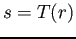
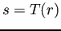

Transformación logarÃtmica
Esta transformación viene expresada por la ecuación (2.4), donde  es el valor resultante de aplicar la transformación sobre el valor de entrada  (con ) y
es el valor resultante de aplicar la transformación sobre el valor de entrada  (con ) y  es una constante, que en la práctica comúnmente se establece como . Utilizada cuando la imagen de entrada tiene un rango dinámico grande, expande las intensidades oscuras y comprime las intensidades claras como se puede observar en la curva de la Fig. 2.3.
es una constante, que en la práctica comúnmente se establece como . Utilizada cuando la imagen de entrada tiene un rango dinámico grande, expande las intensidades oscuras y comprime las intensidades claras como se puede observar en la curva de la Fig. 2.3.
Figura:
Curva de la transformación logarÃtmica.
|
|
christian
2014-01-31